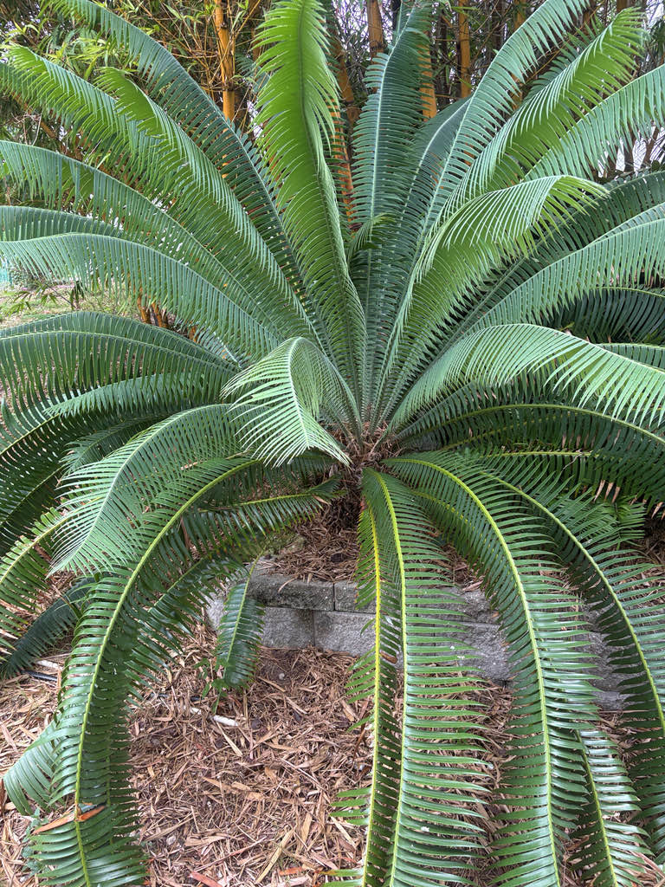

- Despite its palm-like silhouette, this is not a palm and is not even a flowering plant. Cycads reproduce by cone — the exact same basic reproductive strategy they have used since the age of dinosaurs, predating the evolution of flowers by well over 100 million years.
- The seed cones on a female Giant Dioon are among the largest produced by any cycad: up to about 30 inches long and 12 inches across — roughly the size and weight of a massive watermelon sitting right at the center of the crown.
- Because cycads evolved long before bees or butterflies existed, pollination here is handled by specialized, ancient beetles in the genus Pharaxonotha. These pollen-feeding insects live and breed in the male cones, then carry pollen to the female cones — keeping one of the oldest mutualistic relationships on Earth alive.
- The genus name Dioon comes from Greek roots meaning 'two eggs' — a reference to the paired ovules visible on the female cone scales. Look closely at a mature female cone and you can read the ancient description for yourself.
Native exclusively to a small swath of southern Mexico — primarily the states of Veracruz and Oaxaca — where it grows on limestone cliffs, rocky hillsides, and shaded ravines within tropical rainforest, typically below 1,000 feet in elevation. It is an ancient lineage in a very specific place.
It arrived in Florida cultivation as an ornamental, valued as a robust and architecturally striking alternative to sago palms, which have been devastated across Florida by cycad aulacaspis scale. UF/IFAS recommends it for USDA zones 9B through 11, making it well-suited to the Bradenton area and southern half of the state.
- Cycads as a group dominated the world's vegetation during the Jurassic and Cretaceous periods. The basic body plan of Dioon spinulosum has changed remarkably little over millions of years, carrying a prehistoric legacy directly into modern Florida gardens.
- While the widespread loss of Florida's sago palms to cycad aulacaspis scale has driven interest in the genus Dioon, it is worth noting that Dioon is not completely bulletproof.
- UF/IFAS describes the Dioon genus as rarely attacked by this pest, and it is significantly less susceptible than Cycas — but infestations have been documented on Dioon spinulosum under high-stress or heavily infested conditions.
- The names tell you almost everything you need to know. The species name spinulosum is Latin for 'spiny,' referring to the small sharp teeth along the margins of each leaflet. The genus name Dioon comes from Greek roots meaning 'two eggs,' a reference to the paired ovules visible on the female cone scales — together they amount to a prehistoric description: two eggs, covered in spines.
- In their competitive native Mexican rainforest, wild specimens can grow over several centuries to reach towering heights of up to 52 feet. In Florida cultivation, however, they remain a manageable, slow-growing feature, typically topping out between 5 and 12 feet.
Cycads do not attract butterflies or serve as nectar sources in the conventional sense — they are not flowering plants. Pollination in the genus Dioon is instead carried out by specialist beetles in the genus Pharaxonotha — pollen-feeding insects that live and breed in the male cones and transfer pollen to female cones in the process.
It is one of the oldest insect-plant pollination partnerships on record, predating bees and butterflies by a wide margin.
The large seeds produced by female plants are potential food for rodents and larger animals in the native range, though detailed dispersal ecology for this species is not well documented. In Florida cultivation the plant's wildlife value is modest — it does not support native Florida butterflies, moths, or pollinators in any documented way.
Like all cycads, Dioon spinulosum is dioecious — male and female cones are produced on separate individual plants. Propagation is by seed or, less commonly, by offsets (pups) produced at the base of older trunks.
Male plants produce elongated, upright pollen cones from the center of the crown. The cone releases pollen and then drops; a single plant may produce one or several cones in a cycle.
Female cones are among the largest of any cycad — up to about 30 inches long and 12 inches in diameter — and are produced at the crown center. Once fertilized, they develop large, fleshy seeds. The seeds contain concentrated toxins and are not safe to handle casually or ingest.
Pinnately compound, arching, and 5 to 7 feet long at maturity. Individual leaflets are narrow, dark green, and tipped with a sharp spine — the 'spiny' quality the species name references. New leaves emerge in a flush from the crown center and are notably soft before hardening.
Columnar and covered in persistent, rough leaf-base scars, giving the trunk a textured, almost armored look. Older trunks may lean slightly with age. Diameter at maturity is roughly 12 to 16 inches.
Start at the crown: look for a tight rosette of long, arching dark-green fronds emerging from the top of the trunk. If you see a large, upright cone sitting in the center of the crown, note whether it is slender and elongated (male) or thick and barrel-shaped (female). Run your eye down a leaflet — you will feel the sharp spine at the tip before you see it, so look first.
Finally, look at the trunk: the rough, corky texture is made up of old leaf-base scars stacked up over many years, each one marking a past flush of growth.
All parts of this plant are toxic — seeds, leaves, and roots — and the seeds are especially dangerous. The toxic compound is cycasin, which causes severe liver damage and can be fatal; for dogs, ingestion of even one or two seeds can be life-threatening (ASPCA). Keep children and pets well away from fallen seeds.
The stiff leaflets are tipped with sharp spines, and the leaf margins carry small teeth that can easily puncture skin. Plant this cycad well away from walkways or high-traffic areas to avoid accidental scratches and punctures.
Dioon spinulosum is listed as Vulnerable on the IUCN Red List, with wild populations having declined an estimated 70 percent due to habitat destruction and over-collection. It is also listed on CITES Appendix II, which regulates international trade.
The plants you see here at Palma Sola Botanical Park are nursery-propagated specimens — a conservation-responsible way to appreciate one of the world's most ancient and threatened plants.


- © Randall Carter (CC-BY-NC), via iNaturalist
- © Ruby Meador (CC-BY-NC), via iNaturalist